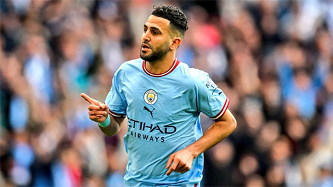

Bóng đá - Cá độ - Tài xỉu
Nhà ĐKVĐ Premier League và Champions League sẽ nhận thù lao 43 triệu bảng/năm kèm các khoản thưởng với hợp đồng 2 năm tại Al-Ahli. Đây là mức lương cao hơn 5 lần so với những gì đang nhận ở Man City (8,5 triệu bảng). Vấn đề còn lại của Al-Ahli chỉ là thuyết phục Man City nhả người với mức phí chuyển nhượng hợp lý. Ngôi sao người Algeria sẽ bước sang tuổi 33 vào tháng 2 năm sau, nên việc anh muốn rời Etihad thực tế cũng là điều dễ hiểu. Tại Man City, Mahrez đã đoạt mọi danh hiệu cao quý, bao gồm "cú ăn ba" lịch sử mùa trước.
Tại Man City, Mahrez hầu như chỉ được xem là phương án dự bị thay vì chắc suất đá chính. Sự xuất sắc của Bernardo Silva bên hành lang phải khiến cơ hội xuất phát từ đầu của Mahrez trở nên khó khăn hơn. Với việc đã no nê danh hiệu, chuyển sang Al-Ahli kiếm tiền sẽ là nước đi hợp lý của Mahrez. nhiều bằng thủ môn Ederson hay các hậu vệ như Akanji hay Ruben Dias.
Tin tức nổi bật